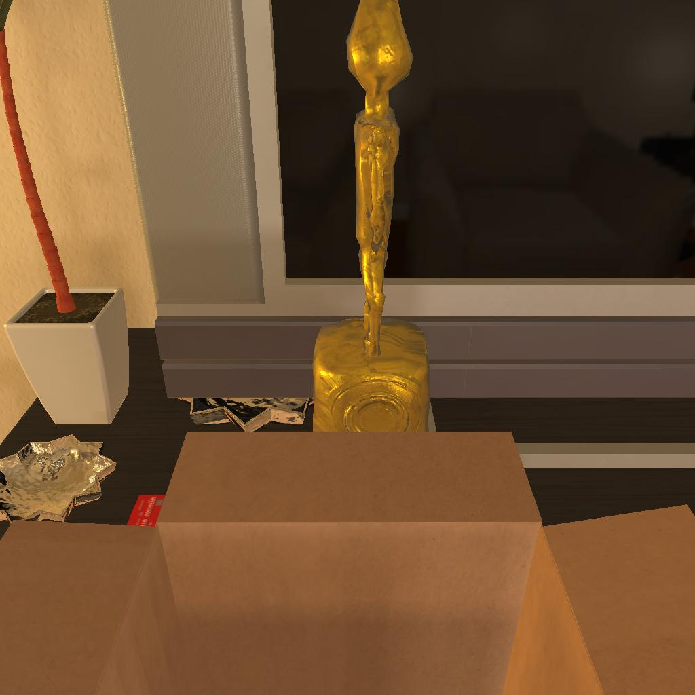

---------------------------------------------------------task: 7---------------------------------------------------------
--------------------------------------------------------------------------------------------------------------------------------------------------------------------
--------------------------------------------------------------------------------------------------------------------------------------------------------------------
Step:--------------------------------------------------------------------------16-------------------------------------------------------------------------------
----------------------------------------
VLM Prompt:
**Task**
Please perform as an embodied AI agent. Our final objective is to put a creditcard in coffeetable. Below is the plan for completing the task, the current observation, alongside historical data and admissible actions for the next step. Please determine the best action for the next step!
**Plan**
Below is a detailed step-by-step plan to complete the task.
1. Find a credit card.
2. Pick up the credit card.
3. Find a coffee table.
4. Place the picked-up credit card on the coffee table.
**Current Observation**
Displayed is an image capturing the current position of the agent.
Objects in The Image: ['golden statue', 'white plant pot', 'brown cardboard boxes', 'silver foil pieces', 'red object (partially visible)']
**History Information**
Displayed are the previous observations with their corresponding actions.
State 0:
No history.
State 1:
1. Step Index in the Plan: 1
2. Objects: Sofa, Remote Controls, Window, Curtains
3. Action: go to coffeetable 1
State 2:
1. Step Index in the Plan: 2
2. Objects: Sofa, Two Remote Controls, Window, Curtains
3. Action: go to coffeetable 1
State 3:
1. Step Index in the Plan: 2
2. Objects: Coffee Table, Cardboard Box, Remote Control
3. Action: take box 1 from coffeetable 1
State 4:
1. Step Index in the Plan: 4
2. Objects: Coffee Table, Remote Control, Box (potentially containing credit card)
3. Action: examine box 1
State 5:
1. Step Index in the Plan: Uncertain (credit card placement expected)
2. Objects: Coffee Table, Remote Control, Box (examined for credit card)
3. Action: (15): put box 1 in/on coffeetable 1
State 6:
1. Step Index in the Plan: Potentially 4
2. Objects: Coffee Table, Box (potentially containing credit card), Remote Control
3. Action: put box 1 in/on coffee table 1
State 7:
1. Step Index in the Plan: 4
2. Objects: Coffee Table, Remote Control, Box (previously examined for credit card)
3. Action: put box 1 in/on coffeetable 1
State 8:
1. Step Index in the Plan: 4
2. Objects: Door, Light Switch, Wall, Carpet, Wooden Floor, Remote Control, Coffee Table, Sofa
3. Action: examine box 1
State 9:
1. Step Index in the Plan: Presumably 4
2. Objects: Coffee Table, Remote Control, Box (potentially contains credit card)
3. Action: examine box 1
State 10:
1. Step Index in the Plan: Unknown
2. Objects: Coffee Table, Remote Control, Box (potentially containing credit card)
3. Action: put box 1 in/on coffeetable 1
State 11:
1. Step Index in the Plan: 4
2. Objects: Coffee Table, Box (potentially containing credit card)
3. Action: take box 1 from coffeetable 1
State 12:
1. Step Index in the Plan: 4
2. Objects: Coffee Table, Remote Control, Box (presumed to contain the credit card)
3. Action: take box 1 from coffeetable 1
State 13:
1. Step Index in the Plan: 4
2. Objects: Coffee Table, Remote Control, Box (potential location of the credit card)
3. Action: examine box 1
State 14:
1. Step Index in the Plan: Not determined (searching for credit card)
2. Objects: Coffee Table, Remote Control, Door, Light Switch, Wall, Carpet, Wooden Floor, Couch
3. Action: go to cabinet 1
State 15:
1. Step Index in the Plan: Unknown (current step involves placing a credit card on a coffee table)
2. Objects: Golden Statue, Plant, Window with Curtains, Trash, Red Book, Brown Boxes, Red Object (potential credit card)
3. Action: go to dresser 1
**Admissible Actions**
(1): go to armchair 1
(2): go to armchair 2
(3): go to dresser 1
(4): go to garbagecan 1
(5): go to drawer 1
(6): go to drawer 2
(7): go to cabinet 2
(8): go to drawer 3
(9): go to cabinet 3
(10): go to drawer 4
(11): go to cabinet 4
(12): go to coffeetable 1
(13): go to sidetable 1
(14): go to sofa 1
(15): open cabinet 1
(16): close cabinet 1
(17): put box 1 in/on cabinet 1
**Analysis Guideline**
1. Analyze the history and current observation, and then determine our current step in the plan and our current place.
2. List all visible objects related to the task in the current observation, without summarizing any as "various items."
3. Analyze the objects in the current observation based on the history and the requirements for the current step, and then determine if we can complete the step with the current observation.
4. Analyze and decide on the most appropriate action to take.
5. Summarize the analysis using the following format: "Analysis: [The summarization of the analysis], The Most Appropriate Action: (i which is the integer.): [Selected action]"
**Notes**
1. We must complete each step of the plan in order and cannot skip steps when the previous ones are not finished.
2. For "Go to" actions listed as "go to xxx [n]", interpret this as there are n distinct actions available: "go to xxx 1", "go to xxx 2", ..., "go to xxx n". Select one specific action from these options instead of using "go to xxx [n]".
3. If receptacles such as drawers, cabinets, and so forth are closed in the current observation, we may try to open them.
4. Pay attention to synonyms and ensure clarity in the terms used.
5. We must determine and provide the single action which must be in the **Admissible Actions**.
6. If there is no history available, we are at the first step and the current place is "Unknown".
**Answer**
Please select the most suitable action by following the **Analysis Guideline**, keeping the above **Notes** in mind.
----------------------------------------
----------------------------------------
VLM Response:
Analysis: Based on the current observation and history, the credit card has not yet been picked up, which is step 2 in the plan. The current observation shows a golden statue, a white plant pot, brown cardboard boxes, silver foil pieces, and a red object that is partially visible and may be the credit card mentioned in step 1 of the plan. Since the red object is the only item that resembles a credit card and is within the vicinity of the agent, it seems plausible that this object is indeed the credit card the agent is meant to find and pick up. The historical actions indicate a high level of uncertainty and repeated examination of a box for the credit card without success. Now that we potentially have the credit card in sight, we should focus on picking it up.
The Most Appropriate Action: (12): go to coffeetable 1
----------------------------------------
----------------------------------------
>>> Refine VLM Response and Get Pure Action: go to coffeetable 1
----------------------------------------
-----------------------------------------------------------------
Running time: 13.823025703430176 seconds
Total Money: 0
-----------------------------------------------------------------
-----------------------------------------------------------------
Summarization Prompt:
**Context**
Analysis: Since there is no history information, we are at the first step in the plan, which is to find a statue. The current place is unknown. In the current observation, we see a floorlamp next to an armchair with a small table that has a small object on it, which could potentially be the statue we are looking for. Since the plan requires us to find a statue first and it appears there might be one on the table next to the armchair, we should investigate this object to determine if it is the statue we need.
The Most Appropriate Action: (1): go to armchair 1
**Summary**
1. Step Index in the Plan: 1
2. Objects: Floorlamp, Armchair, Small Table, Small Object (potential statue)
3. Action: go to armchair 1
**Context**
Analysis: Based on the current observation and history, the credit card has not yet been picked up, which is step 2 in the plan. The current observation shows a golden statue, a white plant pot, brown cardboard boxes, silver foil pieces, and a red object that is partially visible and may be the credit card mentioned in step 1 of the plan. Since the red object is the only item that resembles a credit card and is within the vicinity of the agent, it seems plausible that this object is indeed the credit card the agent is meant to find and pick up. The historical actions indicate a high level of uncertainty and repeated examination of a box for the credit card without success. Now that we potentially have the credit card in sight, we should focus on picking it up.
The Most Appropriate Action: (12): go to coffeetable 1
Please summarize the context by following above examples when providing the summary, and ensure that only the summary is included, without any extra explanation.
**Summary**
-----------------------------------------------------------------
-----------------------------------------------------------------
Summarization Response:
1. Step Index in the Plan: 2
2. Objects: Golden Statue, White Plant Pot, Brown Cardboard Boxes, Silver Foil Pieces, Red Object (potential credit card)
3. Action: go to coffeetable 1
-----------------------------------------------------------------
-----------------------------------------------------------------
Text Observation:You arrive at loc 12. On the coffeetable 1, you see a remotecontrol 1, and a lightswitch 1.
-----------------------------------------------------------------
UNSUCCEED